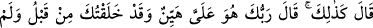
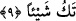
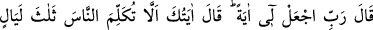
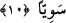

kısır olan bu hanımından mı, evleneceği başka bir hanımdan mı, yoksa bir câriyeden mi
olacağını öğrenmek istedi.”
9. Dedi ki: “Öyledir”; Rabb’in: “O bana kolaydır, daha önce sen hiçbir şey
değilken seni de yaratmıştım.” buyurdu.”
Melek müjde olarak “dedi ki: “Öyledir” durum senin dediğin gibidir. Sen her ne
kadar çocuk sâhibi olmayı kendinden uzak görüyorsan da “Rabb’in: “O bana kolaydır”
diyor. Yani ben, sana gücünü iâde ederim, hem cimâ yapacak güçte olursun, hem de
hanımının rahmini çocuk yapmak için elverişli hâle getiririm. Nitekim Celâleyn ve
Kâşifî âyeti böyle tefsir etmiştir.
el-İrşâd’da şöyle der: “O bana kolaydır” ifâdesi, zikredilen vaadi ikrar eden bir
cümle olup o vaadin gerçekleştiğini göstermektedir. Yani âdetâ şöyle denilmektedir:
‘Vaad ettiğim o olağan üstü çocuğu Zekeriyya’ya vermek normalde imkânsız ise de bana
özellikle çok kolaydır.’ Bu takdirde ayrıca Allah Teâlâ’nın daha önce geçen vaadine
işâret vardır. Yani Allah Teâlâ: ‘Durum, Benim vaad ettiğim gibidir ve bu da olmuştur.
Bunda şaşılacak hiç bir şey yoktur’ buyurmuş demektir.”
“Daha önce sen hiçbir şey değilken seni yaratmıştım.” yani Âdem’in yaratılışından
nice sonra ve Yahya’nın yaratılışından da önce seni yaratmıştım. Halbuki o zaman sen
aslında hiçbir şey değildin. Tamamen yoktun. Yahya (a.s.)’ ın iki insandan yaratılması
senin tek başına yaratılmandan daha kolaydır. Burada tek başına yaratılan kimseden
maksad ise Hz. Âdem’dir. Çünkü o bütün zürriyetleri içine alan bir nümunedir.
İmam Râzî demiştir ki: Bu âyetin delil getirilmesinin açıklaması şöyledir: Hz.
Âdem’in sırf yokluktan yaratılması, zât ve sıfatların yaratılması demektir. Çocuğun
(burada Yahya’nın) iki ihtiyardan yaratılması ise ancak sıfatların değiştirilmesini
gerektirir. Zât ve sıfatları yoktan yaratabilen, sıfatları çok daha kolay değiştirebilir.”
Bahru’l-ulûm’da şöyle der: “Şey” lâfzı bize göre var olan ve olmayan şeyler için de
kullanılabilir. Bir şeyin var olduğunu inkâr etmek yokluğunu kabul etmek demektir. Âyet,
yok olan bir şeyin (ma‘dûmun) bir ‘şey’ olmadığına delildir.”
10. Zekeriyya (a.s.): “Rabb’im! (Çocuğum olacağına dair) bana bir alâmet ver.”